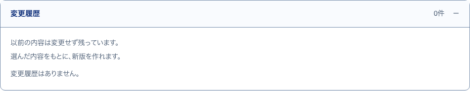
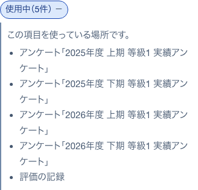
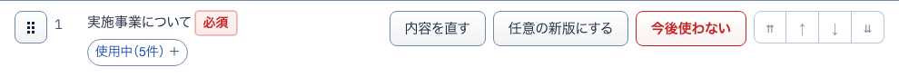
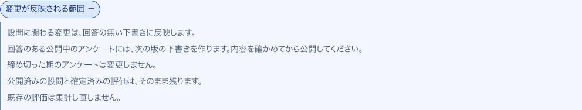

15変更履歴開いて見る
S14 等級要件（支援・運営） ・ 押すもの: 「変更履歴」

中に出るもの
- 以前の内容は変更せず残っています。
- 過去版の札つきの項目
- 0件なら 変更履歴はありません。
中で押せるもの
- この内容をもとに新版を作る: 過去版の文で新版を作る（押すと保存する）
20使用中開いて見る
S15 昇格の条件・要件 ・ 押すもの: 「使用中」

中に出るもの
- この項目を使っている場所です。
- アンケートの名前
- 確定済みの評価
16回答する人にはこう見えます見本
S14 等級要件（支援・運営） ・ 押すもの: 「見てみる」 ・ 閉じる: 閉じる
中に出るもの
- 区分ごとの項目
- ○ できている ／ × まだできていない
- 回答画面には点数・評価基準は出ません
中で押せるもの
- 閉じる: 見本を閉じる
18仮置きの札説明
S15 昇格の条件・要件 ・ 押すもの: 「仮置き」 ・ 閉じる: マウスを離す
中に出るもの
- 制度として未確定のため、叩き台の初期値を入れています。
21内容を直す開いて見る
S15 昇格の条件・要件 ・ 押すもの: 「内容を直す」 ・ 閉じる: やめる

中に出るもの
- いまの文の入力欄
- 以前の内容は変更履歴に残ります。
中で押せるもの
- 新版として保存: 直した文を新しい版として保存する
- やめる: 元の行に戻す
17消せない理由開いて見る
S14 等級要件（支援・運営） ・ 押すもの: 「「使用中」の項目を消せない理由」

中に出るもの
- 一度でもアンケートに出した項目は、完全には消せません。
- 公開したアンケートと確定済みの評価を変えないためです。
- 「使わない」にすると、次のアンケートから外せます。
19変更が反映される範囲開いて見る
S15 昇格の条件・要件 ・ 押すもの: 「変更が反映される範囲」

中に出るもの
- 回答の無い下書きに反映する
- 回答のある公開中のアンケートには次の版の下書きを作る
- 締め切った期のアンケートは変えない
- 公開済みの設問と確定済みの評価は残る
- 既存の評価は集計し直さない
22必須・任意の入替押したあとに出る
S15 昇格の条件・要件 ・ 押すもの: 「任意の新版にする」 ・ 押すと保存や送信が起きるので、写真は載せていない
中に出るもの
- 必須と任意を入れ替えた新版
- 前の版は変更履歴に残る
- 保存の文